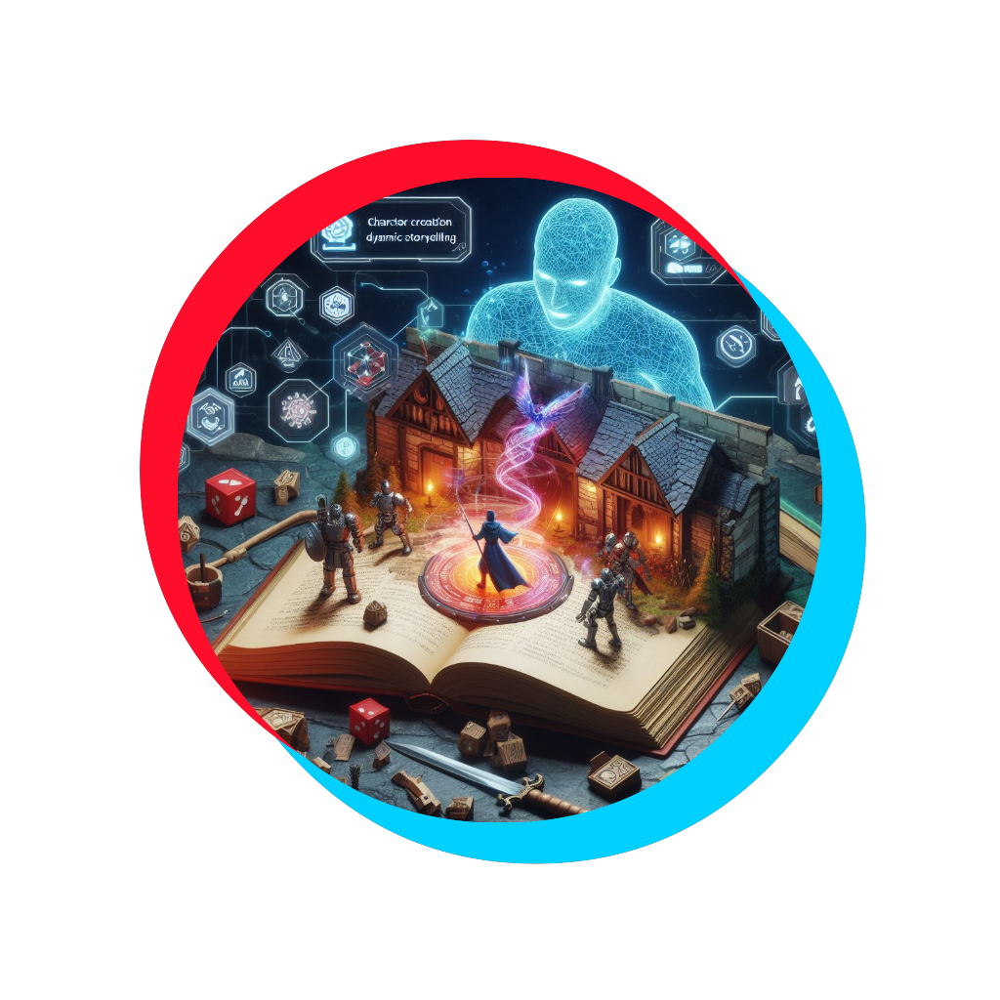
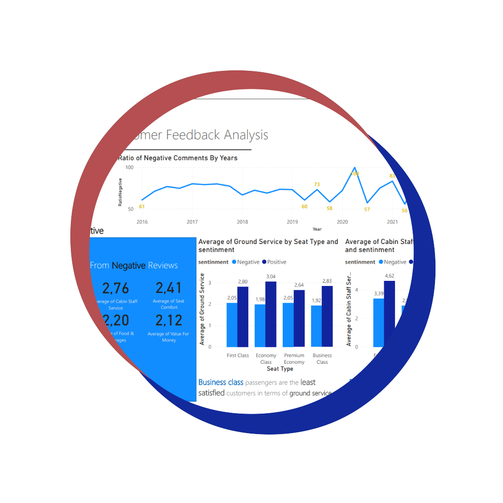
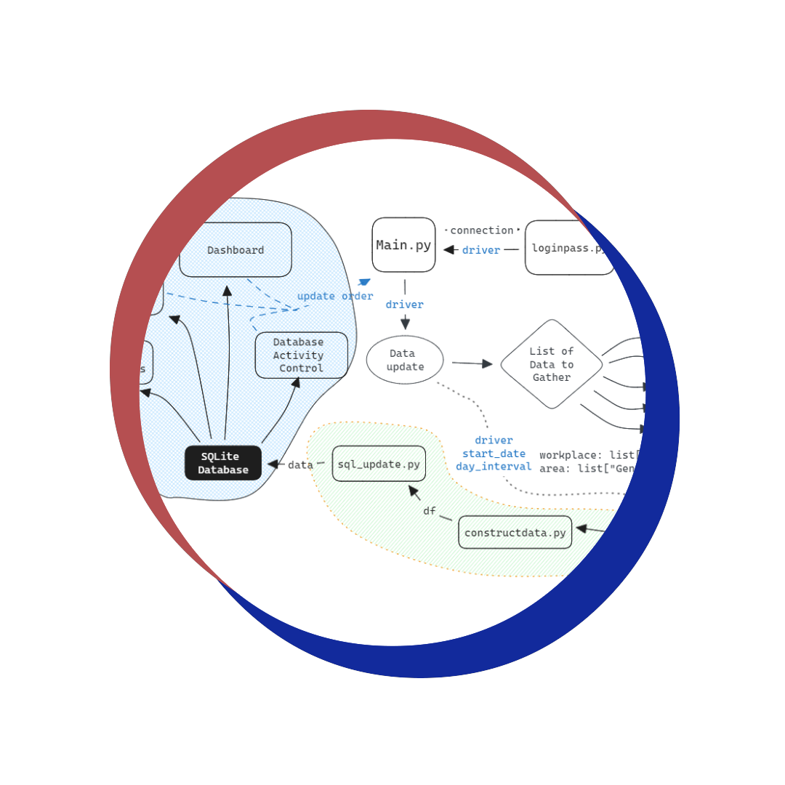

Quantitative finance
Quantitative finance
Transition matrices built from EMA and RSI regimes over twenty years of equity data, with expected-value scoring and threshold-driven trading — benchmarked honestly against buy-and-hold, which outperformed it.
- Markov chains
- Technical analysis
Read more
Recommender systems
Collaborative filtering and content-based recommendation over 3.6 million user interactions from the Million Song Dataset — matrix factorization, implicit feedback modelling and hybrid strategies.
- Matrix factorization
- Implicit feedback
Read more
Predictive modelling
Predicting churn from usage, contract and demographic data with Random Forests and neural networks, identifying at-risk customers so retention effort goes where it changes the outcome.
- Random Forest
- Neural networks
Read more
Computer vision
CNN baselines, EfficientNetB0, MobileNetV2 and Xception compared on leaf disease images; Xception reached 98.75% accuracy, with batch size the decisive constraint against GPU memory.
- Xception
- Transfer learning
Read more

LLM application
An AI dungeon master built on locally served Mistral and Llama 2 models. The interesting part is the scaffolding: how prompts and state carry combat, character creation and continuity between turns.
Read more

NLP · Forage programme
Sentiment analysis of airline customer reviews, from web scraping through NLP to predictive modelling of flight satisfaction.
- Web scraping
- Sentiment analysis
Read more
Analytics · Forage programme
Exploratory data analysis and K-Means clustering over customer demographics, transactions and behaviour to find the segments with the highest revenue potential for a bicycle retailer.
Read more

Data engineering
A workflow automation system for collecting, updating, processing and reporting business intelligence data, architected around large datasets, periodic updates and readable report generation.
Read more